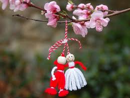
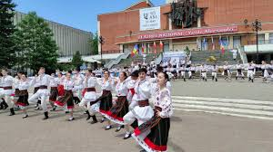
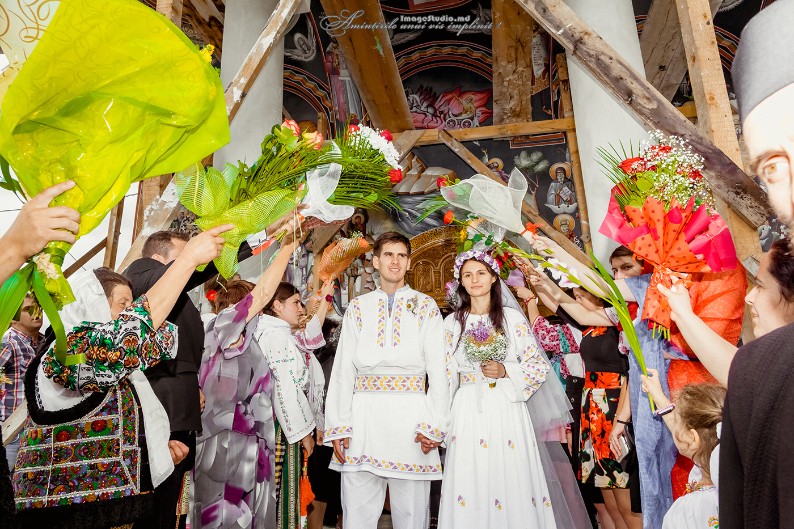

Tradiții-Bălți
Sărbătorile de iarnă (Crăciun și Anul Nou)
În Bălți, tradițiile de iarnă sunt foarte vii. Cete de colindători merg din casă în casă cântând colinde și urând gazdelor sănătate și belșug. Se păstrează obiceiul de a primi colindătorii cu nuci, mere și dulciuri.
Mărțișorul (1 Martie)

De Mărțișor, oamenii oferă mici simboluri legate cu fir alb-roșu, care aduc noroc și sănătate. În Bălți au loc și târguri și spectacole folclorice.
Festivaluri locale și Ziua Orașului

De Ziua Orașului Bălți, sunt organizate concerte, târguri și expoziții. Participă artiști locali și naționali, iar atmosfera este plină de muzică și dans.
Tradiții de nuntă

Nunțile în Bălți respectă multe obiceiuri vechi: „iertăciunea”, hora miresei și ritualuri simbolice care marchează trecerea la viața de familie.